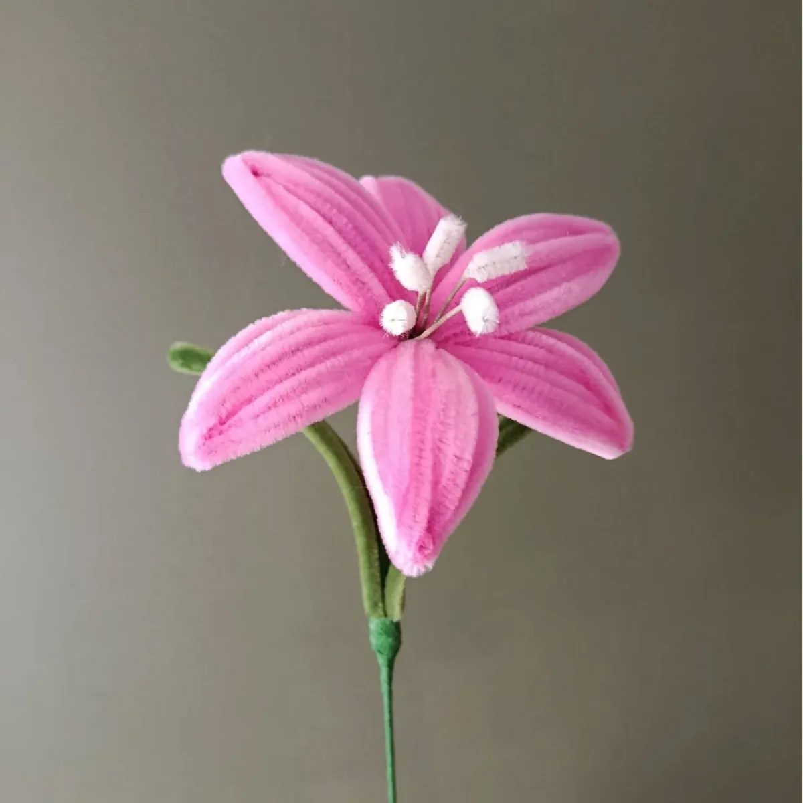

Les fleurs de l’atelier
Lys en fil chenille
Grandes étoiles aux étamines délicates, les lys font partie des fleurs signatures de l’atelier. En fil chenille, leurs longs pétales sont pliés et galbés un à un, avec parfois une touche de maquillage pour leur donner de douces nuances.
Le lys en fil chenille
Grandes étoiles aux étamines délicates, les lys font partie des fleurs signatures de l’atelier. En fil chenille, leurs longs pétales sont pliés et galbés un à un, avec parfois une touche de maquillage pour leur donner de douces nuances.
Le lys a un vrai avantage en version éternelle : ses étamines ne tachent pas et il ne libère aucun pollen. On peut donc le poser partout, même dans une chambre.
Le langage des fleurs
Le lys symbolise la pureté et l’élégance. Le lys blanc accompagne les grands moments de la vie, le lys rose dit l’admiration, l’orange et le jaune la gaieté.
Dans mes créations
Seul, un lys suffit à habiller un soliflore. En bouquet, il donne de la hauteur et de l’éclat : lys roses, lys orange et jaunes, lys bleus ou lys blanc et bordeaux.
Bon à savoir
Le lys XL est au cœur des bouquets Améthyste, Sunny et Rubis.
Une fleur à l’unité coûte 8 €, et un bouquet 8 € par fleur, feuillage offert. Chaque création est emballée dans une pochette transparente fermée d’un nœud, avec sa carte de vœux offerte.